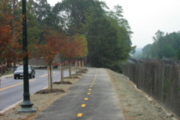
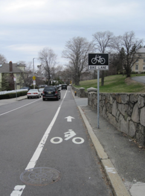
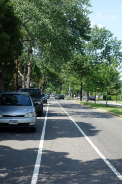
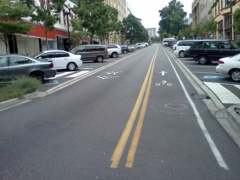
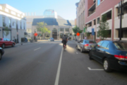
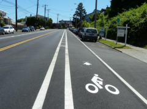
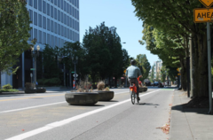
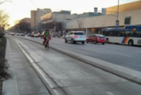
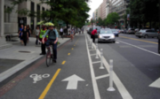
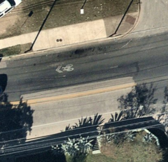

Guide
Tags
For this exercise, we are focusing only on these tags:
| cycleway | highway | lanes | maxspeed | oneway | parking | surface |
Bike facility examples
| Photo | Denominations | Tags | Remarks |
|---|---|---|---|
|  | Trail Sidepath |
highway=cycleway surface=asphalt |
Must be drawn as its own centerline. |
|  | Bike lane without parking | cycleway:{side}=lane parking:lane:{side}=no_parking |
|
|  | Bike lane with parking | cycleway:{side}=lane parking:lane:{side}=parallel |
|
|  | Contraflow bike lane | oneway=yes cycleway:{side}=opposite_lane |
|
|  | Bike + parking lane | cycleway:{side}=lane parking:lane:{side}=parallel |
|
|  | Buffered bike lane | cycleway:{side}=buffered_lane |
|
|  | One-way cycle track One-way protected lane |
cycleway:{side}=track | See also cycle tracks alternative |
|  | Contraflow cycle track | cycleway:{side}=opposite_track | |
|  | Two-way cycle track Two-way protected lane |
highway=cycleway | Must be drawn as its own centerline. |
|  | Sharrows Shared Lane |
cycleway:{side}=shared_lane |
Remarks
Cycle tracks alternative
Cycle tracks can alternatively be mapped as a separate centerline, in which case they should be tagged as:
highway=cycleway
oneway=yes
Frequently asked questions
Which side of the road?
left and right are relative to the direction the line is drawn in OSM, which is indicated by an arrow on the line,
not necessarily the direction of travel on the bike lane.
| General diagram | Representation in ID editor |
|---|---|
 |
 |
In the facilty examples above, {side} can be either left or right. When it is both, the direction is omitted.
Official documentation: Forward & backward, left & right
How many lanes?
- The
lanestag represents the count of all car travel lanes on the the road, in both directions. - Center turn lanes must be included in the number of lanes.
- Non-car lanes are omitted.
- Parking lanes are ommitted.